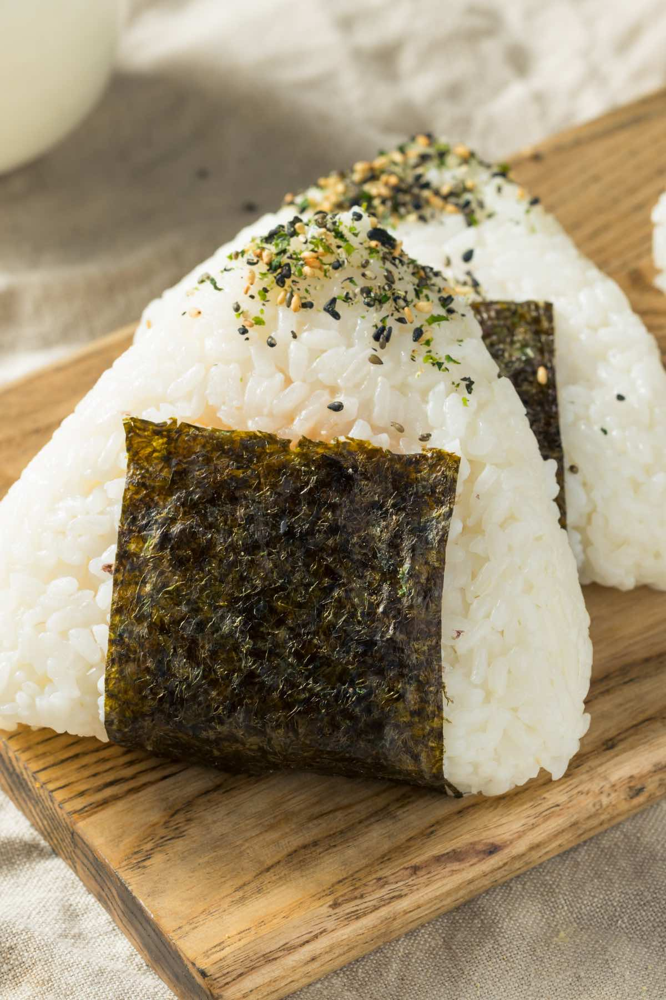

Recipe

Description
Deliciously filling snacks or light meals do not come much easier than omusubi. Omusubi is another name for onigiri rice balls; that quintessential Japanese food that is perfect for using in bento boxes, for enjoying as a quick lunch, or for having on the run as a snack. You can use whatever rice seasoning you want, so the flavour possibilities are endless.
Ingredients
- 150g japanese rice
- 15g furikake rice seasoning of your choice
Preparation
- Start by cooking your rice using your preferred method. If you are not sure about how to cook Japanese rice, try using japancentre.com's Japanese Rice recipe to guide you.
- Once the rice has cooked and cooled slightly, measure out approximately 320g (or 2 normal sized bowls worth) of cooked rice into a larger bowl and add about 15g of the rice seasoning.
- Mix the rice seasoning with the rice until it has a good even consistency before grabbing a handful and shaping it into a triangle with your hands. It’s a good idea to wet your hands before shaping as the rice is very sticky.
- Finally, place a few onigiri on the bamboo leaf and wrap it up before carefully tying it up with string. And there it is, a perfectly presented authentic Japanese dish.